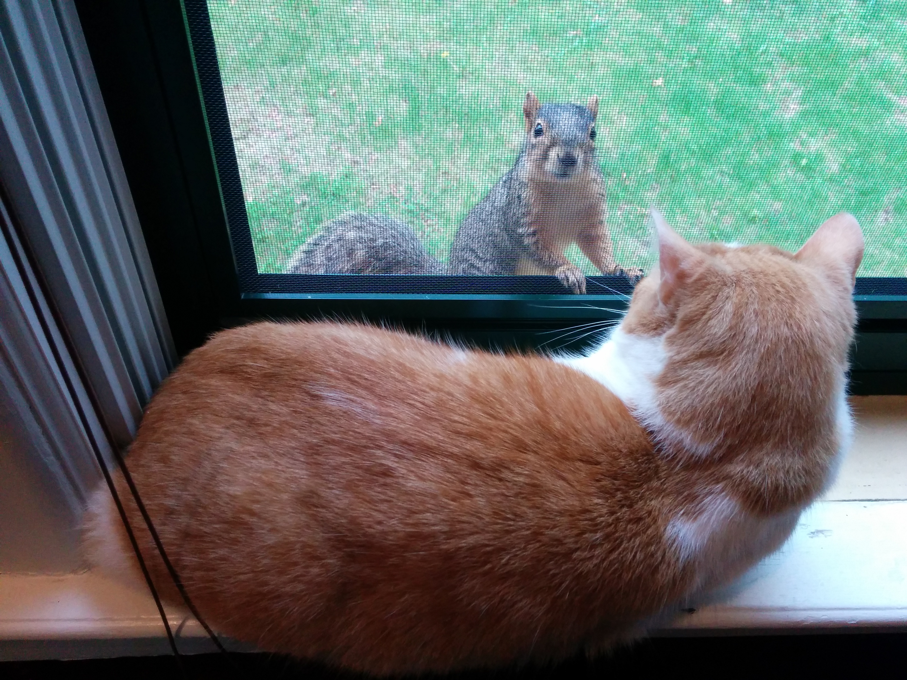

Firefox OS
Web Native
self.conference / Detroit / May 30, 2014
Who am I?
{computer,web,mad} scientist
{tech,scifi} writer
home{brew,roast}er
 Mozillian
Mozillian
Agenda
Mozilla & Firefox OS
Apps & the Open Web
Web APIs & Web Activities
Seriously, what about native?
Developer Tools
Hacking Firefox OS
What is Mozilla?
“Our mission is to promote openness, innovation & opportunity on the Web.”

What is Mozilla?
Yeah, ensuring a fantastic Open Web is part of our mission.
What is Mozilla?
“The success of our mission depends on participation from people like you.”

What is Mozilla?
What is Firefox OS?
“Firefox OS is a new mobile operating system, developed by Mozilla, and based on Linux and the Gecko engine that powers Firefox.”
What is Firefox OS?
“Mozilla’s strategy has been to build Firefox OS primarily for emerging markets, where there are still billions of people who have yet to experience their first smartphone.”
What is Firefox OS?

What is Firefox OS?
What is Firefox OS?
What are Apps?
Appetizers!
What are Apps?
Appetizers!
No!
What are Apps?
Applications
“...an "app" is really much more than just a shortened slang term. It's not just the term that's shortened, and it's not just the term that's slanged. It's also the application itself that's shortened and slanged...”
— Ian Bogost (21 Jan 2011)

What are Apps?
Single task
Limited attention
Focused UX
Touch UI
Cost $1 to $5
($10 is pushing it)
What isn't the Open Web?
.png)

What isn't the Open Web?


What is the Open Web?


Apps & the Open Web
...
Web APIs & Web Activities
...
What about native?
...
Developer tools
...
Hacking Firefox OS
...
Recap
...
Thank you!
